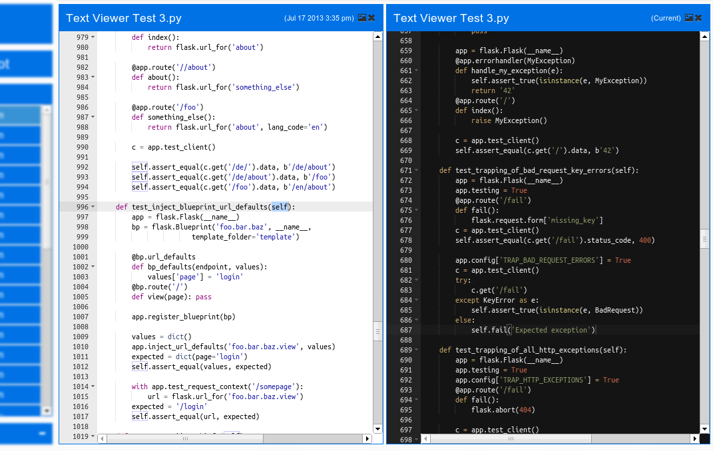
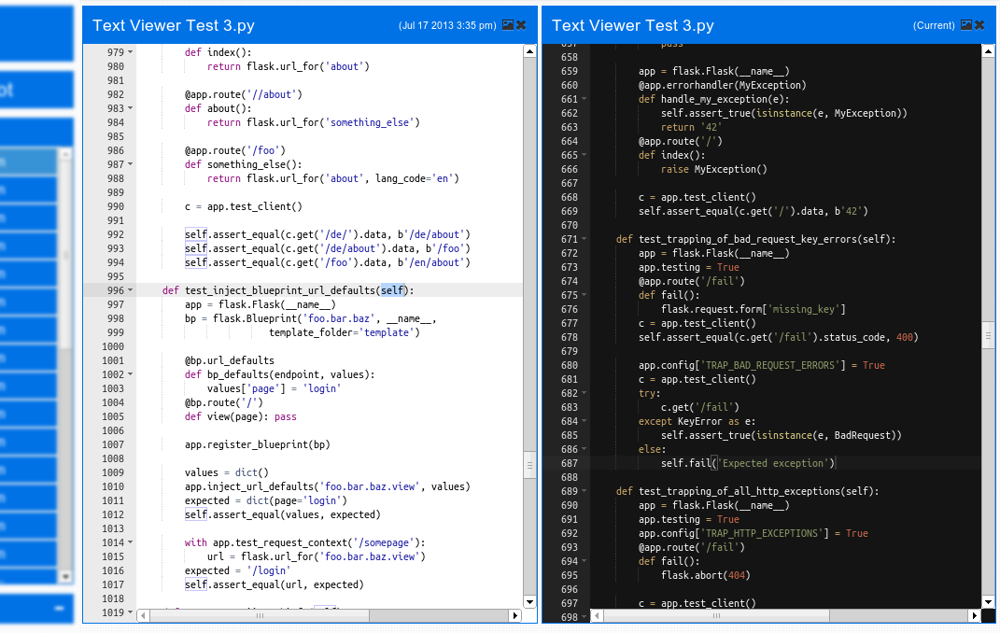

Simple snapshot backups
Snapshot's copy only the changed data. Unchanged data is hard link from the previous snapshot.
All configuration and backup/restore operations are done trough a simple web interface.
Optional email alerts can be enabled to send an email when a scheduled snapshot has an error.
apt-get install -y python-software-properties
add-apt-repository ppa:drivnal/ppa
apt-get update
apt-get install -y drivnal
apt-get upgrade -yto update when a new version is released
curl -O https://aur.archlinux.org/packages/pa/package-query/package-query.tar.gz
curl -O https://aur.archlinux.org/packages/ya/yaourt/yaourt.tar.gz
tar zxf package-query.tar.gz
tar zxf yaourt.tar.gz
cd package-query
pacman -Sy
makepkg -si --asroot
cd ../yaourt
makepkg -si --asroot
yaourt -S drivnal
systemctl start drivnal.service
systemctl enable drivnal.service
yaourt -Syuato update when a new version is released
yum install rsync
yum install python-setuptools
easy_install pip
pip install importlib
pip install drivnal
start drivnal
pip install --upgrade drivnalto update when a new version is released. When upgrading with pip
/etc/drivnal.confwill be overwritten so a backup will need to be created before upgrading
http://<SERVER_ADDRESS>:6500/
 
